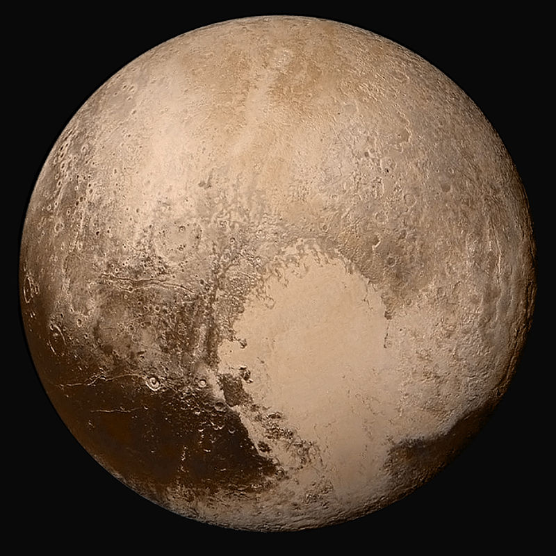
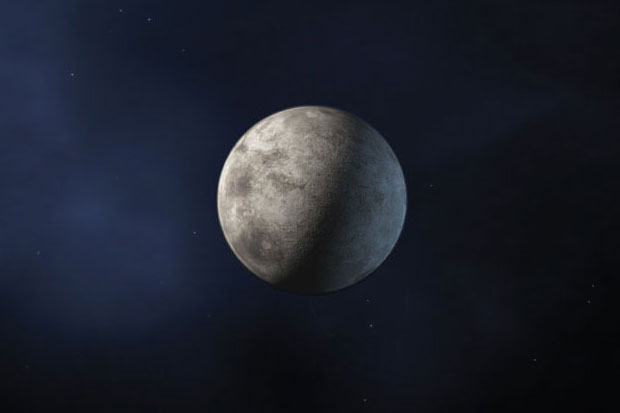

Pluton:
Odległość od Słońca w mln km: 1427
Okres obiegu wokół Słońca: 247 lat ok. 248 dni
Okres rotacji: 153,3 h
Średnica (km): 2370
Gęstość (g/cm³): 1,869
Prędkość ruchu po orbicie (km/s): 4,67
Liczba znanych księżyców: 5
Jest to najjaśniejszy obiekt pasa Kuipera. Został odkryty w 1930 roku przez amerykańskiego astronoma Clyde’a Tombaugha. Od odkrycia do 2006 roku Pluton oficjalnie był uznawany za dziewiątą planetę Układu Słonecznego. 24 sierpnia 2006 roku Międzynarodowa Unia Astronomiczna odebrała Plutonowi status planety, co oznacza, że Układ Słoneczny liczy 8 planet.
Pluton należy do szerszej grupy obiektów transneptunowych. Płaszczyzna, po której się porusza, jest mocno nachylona do płaszczyzny ekliptyki, z silnie ekscentryczną orbitą, która częściowo przebiega bliżej Słońca niż orbita Neptuna. Plutona obiega co najmniej pięć księżyców, z których jeden, Charon, ma tylko o połowę mniejszą średnicę od niego.

Makemake:
Okres obiegu wokół Słońca: 309,4 lat
Okres rotacji: 7,77 h albo 22,48h
Średnica (km): biegunowa: 1430 ± 9 km || równikowa:1502 ± 45 km
Gęstość (g/cm³): 1,7 ± 0,3
Prędkość ruchu po orbicie (km/s): ok. 4,4 km/s
Liczba znanych księżyców: 0
Trzecia co do wielkości rozpoznana planeta karłowata i trzeci co do wielkości obiekt transneptunowy. Jego średnica to około ⅔ średnicy Plutona. Nie zaobserwowano dotąd księżyca, który krążyłby wokół Makemake, co jest nietypowe wśród plutoidów. Jego ekstremalnie niska średnia temperatura (około 30 K) sprawia, że jego powierzchnię pokrywa najprawdopodobniej metanowy i etanowy lód. Obiekt ten nie posiada atmosfery.
Ceres:
Okres obiegu wokół Słońca: 4 lata 221 dni 1godzina
Okres rotacji: ok. 9 h
Średnica (km): 975
Gęstość (g/cm³): 2,08
Prędkość ruchu po orbicie (km/s): 17,8
Liczba znanych księżyców: 0
Jest to planeta karłowata krążąca wewnątrz pasa planetoid między orbitami Marsa i Jowisza. Ma średnicę 950 km i jest największym z ciał krążących wewnątrz tego pasa. Została odkryta 1 stycznia 1801 przez włoskiego astronoma Giuseppe Piazziego. Początkowo była określana jako planeta, po kilkudziesięciu latach zaczęto określać ją jako planetoidę. W sierpniu 2006 roku wprowadzono termin planeta karłowata i Ceres została zaliczona do tej grupy obiektów.

Eris:
Okres obiegu wokół Słońca: 557,4 lat
Okres rotacji: ok. 25,9 h
Średnica (km): 2326 ± 12 km
Gęstość (g/cm³): 2,52
Prędkość ruchu po orbicie (km/s): ok. 3,4
Liczba znanych księżyców: 1
Jeden z obiektów dysku rozproszonego. Eris została odkryta 5 stycznia 2005 roku na zdjęciach, które wykonano 21 października 2003 roku. Odkrycie tego obiektu ogłoszono 29 lipca 2005. Odkrywcy nadali jej nieoficjalną nazwę „Xena”. 13 września 2006 roku uzyskała stałą nazwę Eris, od imienia greckiej bogini niezgody.
(136199) Eris jest obiektem transneptunowym, którego masę już wkrótce po odkryciu oszacowano jako większą niż masa Plutona i z tego powodu w mediach nazywany był dziesiątą planetą. Jednak 24 sierpnia 2006 roku zdecydowano, że Eris, podobnie jak Pluton i Ceres, zaliczona będzie do nowej klasy obiektów – planet karłowatych.
Haumea:
Odległość od Słońca w mln km: 1427
Okres obiegu wokół Słońca: 284,6 lat
Okres rotacji: ok. 3,9 h
Średnica (km): ok. 1393
Gęstość (g/cm³): 2,6 – 3,3 g/cm3
Liczba znanych księżyców: 2
Jest to planeta karłowata z Pasa Kuipera, należąca do grupy plutoidów. Jej tymczasowe oznaczenie to 2003 EL61, a wcześniejsza nieoficjalna nazwa – „Santa” (Święty Mikołaj). Została odkryta 7 marca 2003 roku.
Ciało to nie ma kształtu sferycznego, choć jego rozmiary i masa (ponad 30% masy (134340) Plutona) pozwalały, by w przeszłości uformowało się w obiekt prawie kulisty. Jednak bardzo szybki ruch obrotowy wokół najkrótszej osi (niespełna 4 godziny – jeden z najkrótszych spośród wszystkich ciał Układu Słonecznego o średnicach przekraczających 100 km) spowodował rozciągnięcie planetoidy. Według pomiarów przeprowadzonych za pomocą teleskopu Kecka miał to być obiekt o kształcie grubego cygara o rozmiarach ~1960×1518×996 (średnio 1500) km. Nowsze oszacowania mówią jednak o średnicy ok. 1393 km. Przypuszcza się, że w okresie kształtowania się planet ta planetoida transneptunowa mogła wziąć udział w jakiejś ogromnej kosmicznej kolizji z innym ciałem niebieskim. Wtedy właśnie doszło do przyśpieszenia ruchu obrotowego i utworzenia satelitów tego obiektu oraz innych jeszcze ciał, które nie są już powiązane grawitacyjnie z Haumeą. Wskazuje na to odkrycie pięciu planetoid o orbitach zbliżonych do orbity Haumei, których symulacje orbit prowadzą do wspólnego dla tych obiektów punktu. Byłaby to pierwsza znaleziona w Pasie Kuipera rodzina planetoid powstała w trakcie jednej kosmicznej katastrofy. Około 75% powierzchni Haumei jest pokryte lodem.
Ciało to nie ma kształtu sferycznego, choć jego rozmiary i masa (ponad 30% masy (134340) Plutona) pozwalały, by w przeszłości uformowało się w obiekt prawie kulisty. Jednak bardzo szybki ruch obrotowy wokół najkrótszej osi (niespełna 4 godziny – jeden z najkrótszych spośród wszystkich ciał Układu Słonecznego o średnicach przekraczających 100 km) spowodował rozciągnięcie planetoidy. Według pomiarów przeprowadzonych za pomocą teleskopu Kecka miał to być obiekt o kształcie grubego cygara o rozmiarach ~1960×1518×996 (średnio 1500) km. Nowsze oszacowania mówią jednak o średnicy ok. 1393 km. Przypuszcza się, że w okresie kształtowania się planet ta planetoida transneptunowa mogła wziąć udział w jakiejś ogromnej kosmicznej kolizji z innym ciałem niebieskim. Wtedy właśnie doszło do przyśpieszenia ruchu obrotowego i utworzenia satelitów tego obiektu oraz innych jeszcze ciał, które nie są już powiązane grawitacyjnie z Haumeą. Wskazuje na to odkrycie pięciu planetoid o orbitach zbliżonych do orbity Haumei, których symulacje orbit prowadzą do wspólnego dla tych obiektów punktu. Byłaby to pierwsza znaleziona w Pasie Kuipera rodzina planetoid powstała w trakcie jednej kosmicznej katastrofy. Około 75% powierzchni Haumei jest pokryte lodem.